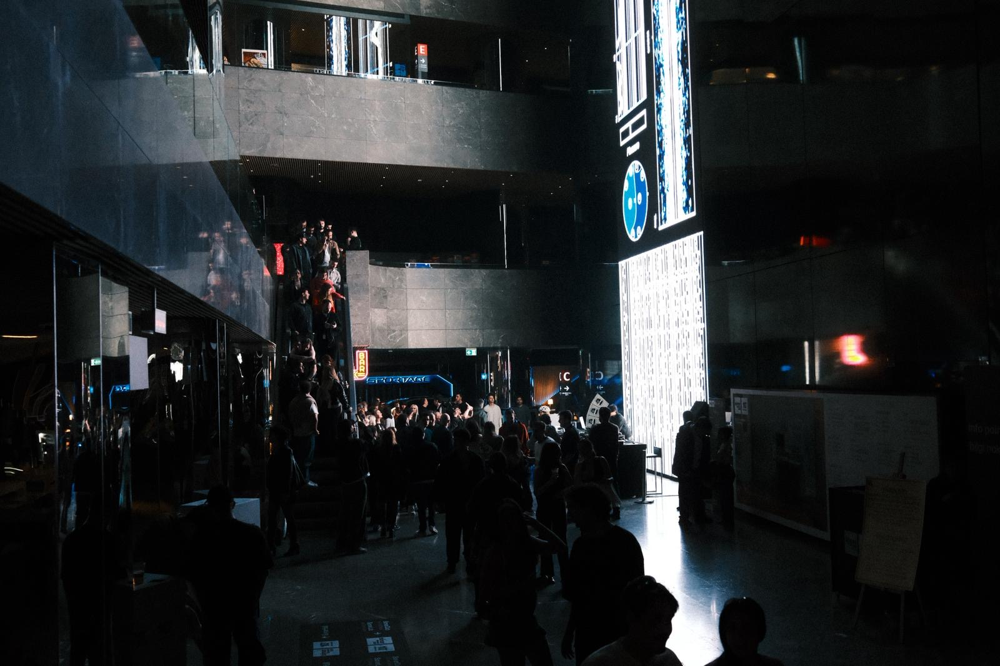

- 2026.08.04
- Audio Buffer Tokyo at Fil
- 2026.07.11
- Vail, A/V performance at Future Frequencies Festival 2026
- 2026.06.23
- Paper published on NIME 2026, Latent Terrain: Adapting Neural Audio Autoencoders as Design Materials in NIME
- 2026.06.19
- liberated frequencies, exhibited at Sónar+D Barcelona 2026
- 2026.04.11
- liberated frequencies, A/V performance at Sónar Istanbul 2026
- 2026.03.20
- liberated frequencies, A/V performance at IRCAM Forum Workshops 2026 Paris / Enghien-les-Bains
- 2026.01.10
- VJ for Nao Tokui at VENT Tokyo
- 2025.12.23
- Sound Design for Reverse Lo-fi Anime Girl, Qosmo
- 2025.12.21
- DJ at Bar Kingyo
- 2025.12.19
- VJ at Beyond 2045 #2 organized by Nao Tokui and Daito Manabe
- 2025.12.13
- Making Sound Map for Sound Atlas #1「極地からの音」at CCBT
- 2025.11.26
- DJ at Bar Kingyo
- 2025.11.19
- VJ at Beyond 2045 #1 organized by Nao Tokui and Daito Manabe
- 2025.11.07
- liberated frequencies, demonstrated at IRCAM Forum Workshops 2025 Hors-les-Murs
- 2025.10.25
- Technical support for TECH BIAS 2 - 分類されない「わたし」展, Tokyo University × Sony Group, Creative Futurists Showcase
- 2025.10.11
- Paper published on bioRXiv, A groove brain-music interface for enhancing individual experience of urge to move
- 2025.08.26
- Making Visual for Widescreen Baroque pre.「WIDE SHOW」vol.0
- 2025.07.19
- VJ at IQOS Together X Night feat. Rhizomatiks
- 2025.07.12
- DJ at Bar Kingyo
- 2025.06.16
- Audio Visual Performance at Sónar+D 2025 AI Performance Playground, an AI & Music Hacklab powered by S+T+ARTS.
- 2025.06.02 - Now
- Making PR Audio/Visual for Neutone Inc.
- 2025.06.01
- Appear in J-WAVE TOPPAN INNOVATION WORLD ERA【Daito Manabe×Keigo Yoshida】Radio
- 2025.05.27
- Visual Programming and Software Engineering for FUTURE 能-NOH STAGE at Expo 2025 Osaka, Kansai, Japan
- 2025.05.17
- Organaizing A/V, DJ event "Concisousness" at Fil
- 2025.02.22
- DJ at Bar Kingyo
- 2025.02.10
- VJ at Radio Sakamoto Uday for SE SO NEON and TOWA TEI
- 2025.01.24
- liberated frequencies, A/V performance and installation at Flying Tokyo the final presentation
Photo Gallery


